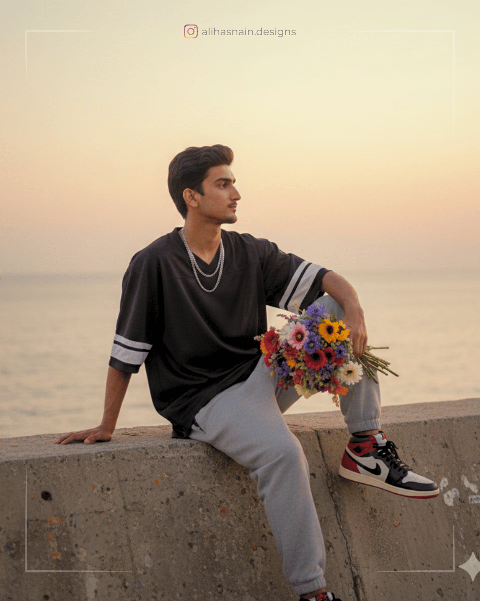

Hyper-realistic slightly side-angle-eye-level full body vertical shot of a (22-years-old) young man leaning on a sofa, adjusting a man's brown shawl. Wearing traditional white shalwar khameez, leather sandals, luxury watch. Modern living room with soft morning light, shallow depth of field, creamy bokeh, and warm cinematic color grading in 8K. Exact same face based on the reference image.
Prompt 22
A stylish young man sitting on a beige sofa in a modern living room, wearing a traditional light green silk kurta with subtle embroidery and white churidar pants. He looks elegant and composed, and confident posture. His brown loafers and accessories add sophistication. Warm natural light fills the cozy interior, with soft neutral tones, a patterned rug, and a decorative wall mirror in the background. Lifestyle, luxury, cultural fashion photography
Prompt 23
A hyper-realistic indoor fashion editorial portrait of a (22-years-old) young man slim, 5'11" lounging casually on a wooden floor, leaning back against a modern grey sofa with embroidered cushions. He is wearing a printed statement shirt with intricate maroon patterns layered under a rust-brown jacket, paired with wide-legged off-white trousers and stylish brown sneakers. His relaxed pose exudes a confident and artsy vibe, one arm stretched across the sofa and the other resting naturally, gazing slightly away with a composed expression. The background features an eclectic wall filled with framed artworks, tribal masks, and textured decor, creating a premium bohemian editorial look Captured in cinematic tones, high-resolution fashion photography style. Exact same face based on the reference image.
Prompt 24
A thoughtful young man sitting by a sunlit window, bathed in warm golden afternoon light. Wearing a casual beige sweater. He sits in a wooden armchair, holding an open book in one hand and a cup of tea in the other, lost in deep contemplation. Soft shadows from plants and curtains fall across his face and sweater, creating a cozy, introspective atmosphere. The background includes a bookshelf and indoor plants, adding to the serene and intellectual vibe. Cinematic, moody, natural lighting.
Prompt 25
A cozy, Pinterest-style portrait of the subject sitting inside a café by the window. The subject is styled in a full-sleeve shirt in color #114a40 with medium-thick vertical white stripes and white linen pants, holding a coffee cup or surrounded by books.
Expression should be soft, thoughtful, and serene.
Background: warm-toned café interior with bookshelves, soft blurred lights, and cozy details.
Lighting: golden sunlight filtering through blinds, casting soft shadows on the face.
Mood: intellectual, aesthetic, cozy, creative.
Style: cinematic lifestyle portrait, warm natural tones, soft focus background.
Face must match the reference image of me.
Prompt 26
A handsome young boy is sitting at a wooden table in a dimly lit library. He's holding up a book and naturally smiling at the camera. He's wearing a short-sleeved shirt in color #167d6a with medium-thick veryical white stripes. The background is a modern bookshelf with many colorful books, and a lamp is on the table to his left. Portrait shot with warm pendant lights and soft daylight creating a creative, lived-in feel. The overall mood is relaxed and intellectual.
Face must match the reference image of me.
Prompt 27
Me sitting at a brown orange wooden desk in a cozy workspace filled with art supplies and plants. I am wearing an olive green shirt with rolled sleeves and beige chinos with brown loafers. Portrait shot with warm pendant lights and soft daylight creating a creative, lived-in feel. Face must match the reference photo of me.
Prompt 28
Cinematic portrait of a young man in the picture (preserve 100% facial details of this man, vintag classroom. The camera is shot from a distance, with a small section of the chair's back vis olen front as if the photographer was taking the portrait discreetly or in a quiet moment Soft, golden yellow lighting reflects from a small window or gap in the right wall forming diagonal lines of light that fall directly on the man's face, creating a dramatic and emotional contrast. The man sits alone In a chair, his feet resting on the desk, with a relaxed and cool expression, as if lost in thought. He wears an oversized army black Sweater, cream-colored cargo pants, Converse sneakers, and red headphones. He has a bag hanging from the chair, but it blends harmoniously with the warm light surrounding him. Behind him is an off-white wall with sticky notes labeled "Saarthak notices, duty schedules, and so on, and a photo at the top. There are also a few decoracions or furnishings typical of a college classroom Reinforcing a nostalgic and contemplative feel, like a frozen moment in time. Soft golden hues of light blend with the dark shadows in the room, creating a quiet, warm, and slightly wistful atmosphere, reminiscent of a scene from a Japanese indie film at dusk or early morning. The overall atmosphere suggests an intimate, introspective moment in silence. All image elements are rendered without bokeh with even sharpness from foreground to background. The visual texture contains noticeable noise and grain, reminiscent of the results of analog 35mm film cameras like the Canon AE for retro digital simulations using the Fujihim X100V with "Classic Chrome film simulation. Possible camera settings: 150 1600, f/5.6 aperture, 1/60s shutter speed, with a warm white balance to maintain the natural golden light in the room. The grain effect can come from 150 400 flim or the digital grain feature intentionally activated to add cinematic character and nostalgia. 3.4
Prompt 29
Ultra realistic cinematic portrait of a 19-year-old young man sitting in a modern recording studio. He is seated on a black gaming chair in front of a desk with a large microphone on a stand, a computer screen in the background showing colorful waveforms and editing software. The lighting is warm and professional, with a soft focus on the background and sharp details on the subject's face. The man's face should exactly match the reference image provided, with natural skin texture, and realistic good mood expression.
Prompt 30
A hyper-realistic portrait of me sitting at a wooden table, leaning slightly forward with one arm resting on the table. I am wearing a black denim jacket with rolled-up sleeves, and inside the Jacket, a white t-shirt. On my wrist, I have a smartwatch with a dark green strap. My head is tilted slightly, with one hand resting casually and comfortably on my forehead. My hair is styled. Exact same face based on the reference image.
Prompt 31
Ultra realistic, hyper-detailed 8K portrait of a (18-years-old) person standing indoors in a modern home interior, leaning casually against a blue table with both hands. He is wearing a mint green linen shirt, slightly transparent with natural fabric texture, sleeves rolled up casually, paired with crisp white pants. Natural daylight. In the background, elegant interior décor is visible - white lilies arranged in a tall yellow glass vase, additional green glass vases on a shelf, patterned wall design, and a mirror reflecting part of the room. The entire scene has a clean, fresh, modern, and luxurious lifestyle aesthetic with cinematic lighting and photorealistic details. Exact same face based on the reference image.
Prompt 32
A (22-years-old) young man sitting in a modern grey armchair, with a modern architecture of home background. His face is like the reference image, black hair with subtle highlights, calm and thoughtful expression. Wearing a beige ribbed sweater, white trousers, and light but dark-brown loafers. One hand lightly touching his chin, the other hand resting casually. Neutral tones, soft lighting, minimal, modern look.
Prompt 33
A hyper-realistic cinematic lifestyle portrait of a stylish 22-years-old young man lounging confidently on a whitw modern hanging wicker chair. He is dressed in a beige shirt with white linen pants business casual loafers, paired with a luxury wristwatch and cap. His expression is cool and composed as he slightly leans back with a relaxed posture, wearing dark sunglasses that add charisma to his look. The setting is a minimal outdoor terrace with subtle decor, soft natural daylight, and a clean modern vibe. Captured in ultra-detailed 8K resolution with sharp textures, natural skin tones, realistic shadows, and a premium fashion editorial aesthetic. Exact same face based on reference image.
Prompt 34
Hyper-realistic portrait 8K.
Look: Black shirt, white trousers, loafers, sunglasses.
Action: Adjusting his sunglasses with one hand, holding bouquet in the other.
Setting: seated at a beachside restaurant with ocean waves behind.
Mood: Refreshing, romantic, breezy
Prompt 35
Hyper-realistic portrait 8K.
Look: Black shirt, white trousers, loafers, sunglasses.
Action: Adjusting his sunglasses with one hand, holding bouquet in the other.
Setting: Beachside balcony with ocean waves behind.
Mood: Refreshing, romantic, breezy
Prompt 36
Make me look like I'm on a beach where it's sunset time but someone took my picture with mobile flash and my face is a bit glittery and glowing. In the background add the sunset like the sun has 98% set leaving light purple red sky and it's almost dark. The image is taken from the front of me. I've been told to turn for the picture. The picture is taken from above the waist, that means it shows only the upper part of my body Image. Exact same face based on the reference image.
Prompt 38
A full-body, professional-style street photograph of a 5'9" young man posing outdoors in front of an ornate, historic building with large glass and metal-framed doors. He is dressed in a casual yet stylish outfit: light blue or pale grey long-sleeve shirt, loose-fitting wide-leg white trousers, and white sneakers. He is standing with his hands tucked into his trousers' waistline, leaning slightly back against a tall, cylindrical grey pillar. The lighting is bright, and the man has a serious expression. Exact same face based on the reference image.
Prompt 38
A (22-years-old), 5'11" young man Leaning back against a graffiti wall, legs crossed, expression confident and commanding.
Outfit: oversized sports jersey, loose gray sweatpants, chunky sneakers.
Accessories: crossbody sling bag.
Camera: Canon EOS R5, 24mm, f/3.5.
Lighting: Natural soft daylight.
Note: Exact same face based on the reference image.

Prompt 39
Sitting low on a concrete edge by the sea, one arm propped back for balance, casual posture with face turned to horizon, holding a flower bouquet in his right hand.
Outfit: oversized sports jersey, loose gray sweatpants, Nike Jordan 1 sneakers.
Accessories: layered silver chain.
Camera: Sony A7 III, 28mm, f/2.8.
Lighting: pastel sunset gradient sky, natural backlight.
Effect: soft cinematic tones, clean highlights, Instagram-ready dreamy finish.
Face must match the reference image of me.
Prompt 40
Create an image of lean (22-years-old) young man, a singer, white shirt, necklace in his neck with a small pendant, wearing dark baggy jeans. Low quality grainy image from a live concert, low angle shot, singing, microphone in hand. Moment of rest standing, he is positioned on the side of the frame, not centered. Green and red spotlights in the dark background. Exact same face based on the reference image.